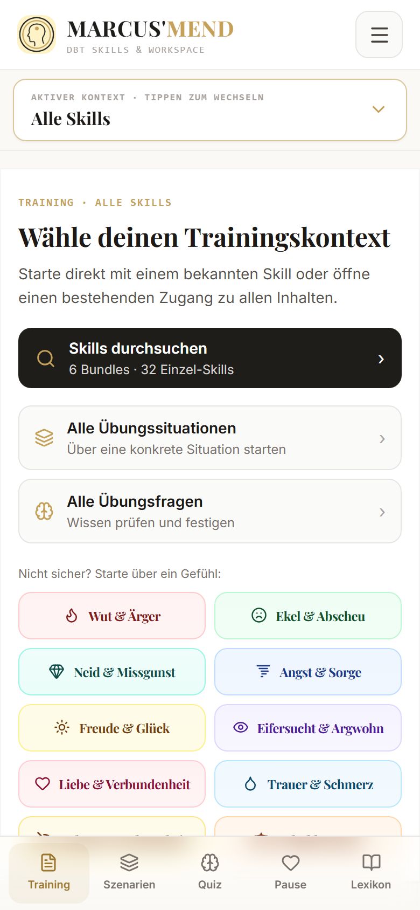
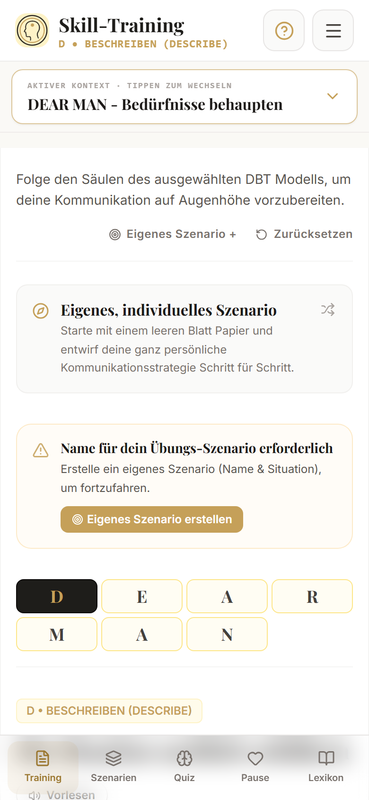
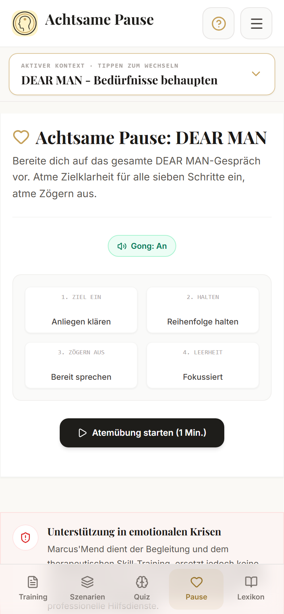

Orientieren.
Finde über eine Fertigkeit oder ein Gefühl einen Einstieg.
Orientierung entdecken →Die richtigen Worte kommen nicht immer von allein. Marcus’Mend begleitet dich dabei, Fertigkeiten aus der Dialektisch-Behavioralen Therapie (DBT) an deinem Alltag zu üben. Schritt für Schritt. In deinem Tempo.
Lern- und Übungswerkzeug. Kein Ersatz für Diagnose, Therapie oder Krisenversorgung.

Orientierung finden, an eigenen Worten arbeiten, das Verständnis vertiefen. Drei Einblicke zeigen dir, wie du mit Marcus’Mend beginnen kannst.
Finde über eine Fertigkeit oder ein Gefühl einen Einstieg.
Orientierung entdecken →
Arbeite einen Skill in überschaubaren Schritten durch.
Training kennenlernen →Prüfe dein Wissen und entdecke die Erklärung dahinter.
Lernwerkzeuge ansehen →Originalansichten aus der App. Abbildungen sind keine bedienbare Demo; Beispiele sind keine Nutzerberichte.
Ein Anliegen aussprechen, eine Grenze formulieren oder bei einem Konflikt beim Thema bleiben: Die Schrittanleitungen geben deiner Vorbereitung eine Struktur.
Beginne mit einem passenden Praxisbeispiel. Überlege, welche Aussage du vorbereiten möchtest, und formuliere die einzelnen Schritte in deinen Worten. Lies das Ergebnis anschließend selbst durch. Du entscheidest, was davon tatsächlich zu deinem Gespräch passt; die App kennt die beteiligten Menschen und die Rahmenbedingungen nicht.
Du hast eine Fertigkeit gelesen oder in einer Skills-Gruppe kennengelernt. Jetzt möchtest du an einer konkreten Situation ausprobieren, was sie in deinen eigenen Worten bedeutet.
Wähle einen überschaubaren Fokus. Bearbeite einen Skill, lies eine Erklärung nach und greife dein Ergebnis später wieder auf. Du musst nicht alle Bereiche bei jedem Besuch verwenden. Favoriten und lokale Skripte erleichtern es, an etwas Bekanntem anzuknüpfen.
Bearbeite ein Beispiel in deinem Tempo. Dein fertiges Skript kannst du kopieren oder über die Druckfunktion mitnehmen und bei Bedarf in deiner Begleitung besprechen.
Nutze das Werkzeug für eigenständige Übung und entscheide selbst, ob du ein Skript besprechen möchtest. Ein ausgedruckter Text kann zeigen, welche Formulierung du erarbeitet hast. Er ist kein automatisch erstellter Bericht über deinen gesundheitlichen Verlauf.
Verbinde Nachschlagen und Ausprobieren: Lies eine Erklärung, bearbeite ein Beispiel und prüfe im Quiz, wie du die Situation einordnest. Du brauchst keine Fachbegriffe auswendig zu kennen.
Schau zuerst ein Praxisbeispiel an. Unbekannte Begriffe kannst du im Lexikon nachlesen. Die App bietet mehrere Zugänge; du kannst direkt einen Skill auswählen oder den Gefühlskompass erkunden. Du musst auf dieser Website nichts über deine persönliche Situation angeben.
Eine Kollegin bittet dich kurzfristig um eine zusätzliche Aufgabe. Du möchtest eine klare Grenze formulieren.
Mit DEAR MAN übst du unter anderem, eine Situation zu beschreiben, dein Anliegen auszudrücken und eine konkrete Bitte zu formulieren. Marcus’Mend bietet Schreibimpulse und Beispiele. Du bestimmst deine Worte.
So unterstützt dich das Training ↓„Du hast mich heute um eine zusätzliche Aufgabe gebeten. Meine eingeplanten Aufgaben füllen den Tag bereits aus. Ich kann die neue Aufgabe heute nicht übernehmen. Lass uns klären, welche Aufgabe Vorrang hat.“
Fiktives, verkürztes Anwendungsbeispiel. Keine Nutzerstimme, kein garantiertes Gesprächsergebnis und nicht das vollständige DEAR-MAN-Training.
Du brauchst keinen großen Plan für den Anfang. Starte dort, wo du gerade eine Frage hast, und arbeite in deinem Tempo weiter.
Starte über den Gefühlskompass oder wähle direkt einen Skill und ein Praxisbeispiel.
Arbeite die Schritte durch. Nutze Musterformulierungen als Ausgangspunkt und passe sie an deine Situation an.
Quizfragen und Lexikon helfen dir, Begriffe und typische Unterschiede nachzuvollziehen.
Schließe dein Skript ab, lies es später nach oder kopiere und drucke es. Zusatzfunktionen lassen sich in den Optionen aktivieren.
Fertigkeiten zum Wahrnehmen, zum Umgang mit Belastung und für das Miteinander – verbunden mit konkreten Übungswegen.
Wahrnehmen, beschreiben und den eigenen Fokus bewusst ausrichten.
Fertigkeiten zum Umgang mit belastenden Situationen kennenlernen und üben.
Gefühle genauer betrachten und Handlungsmöglichkeiten durcharbeiten.
Anliegen, Grenzen und Beziehungsgestaltung in eigenen Worten vorbereiten.
Manchmal kennst du den Skill, mit dem du arbeiten möchtest. Manchmal weißt du zunächst nur, wie du dich gerade fühlst. Marcus’Mend bietet für beide Ausgangslagen einen Zugang: Wähle direkt eine Fertigkeit oder erkunde über den Gefühlskompass passende Übungsbereiche.
So musst du nicht erst die gesamte Bibliothek kennenlernen, um einen Anfang zu finden. Der Trainingsstart verbindet die verschiedenen Zugänge auf einer gemeinsamen Oberfläche.
Der Gefühlskompass verknüpft Gefühle und Beschreibungen mit Übungsbereichen. Er ist keine Untersuchung und stellt keine Diagnose. Auch Vorschläge nach einem Stimmungs-Check-in ersetzen keine persönliche fachliche Einschätzung. Du entscheidest, ob du einen Vorschlag erkunden möchtest oder einen anderen Einstieg wählst.
Der Skript-Builder zerlegt die Übung in einzelne Aufgaben. Zu jedem Schritt findest du eine Erklärung und Anregungen für deine Formulierung. Du kannst mit einem Beispiel beginnen und es so bearbeiten, dass es deine eigene Situation beschreibt.
Bei einem Gesprächsskill steht am Ende beispielsweise ein vorbereitetes Anliegen. Bei anderen Fertigkeiten arbeitest du die zum Skill gehörenden Übungsschritte durch. Inhalt, Wortwahl und Entscheidung bleiben bei dir.
Eine Musterformulierung ist eine Vorlage, keine persönliche Empfehlung. Übernimm nur, was tatsächlich passt, und ändere den Rest. Die Checklisten beziehen sich auf den jeweiligen Übungsschritt. Sie bescheinigen weder eine therapeutisch richtige Entscheidung noch den Erfolg eines Gesprächs. Quellenhinweise und Verbindungen ins Lexikon ermöglichen weiteres Nachlesen.
Ein konkreter Fall macht häufig deutlicher, was mit einem Skill gemeint ist. Im Szenarienbereich findest du vorbereitete Alltagssituationen und kannst sie durchsuchen. Ein ausgewähltes Beispiel lässt sich in das Training laden.
Wenn du eine eigene Ausgangslage festhalten willst, kannst du ein eigenes Szenario anlegen. Damit wird aus einer allgemeinen Vorlage dein persönlicher Übungsfall. Diese Funktion ist bei Bedarf in den Optionen zu aktivieren.
Das Szenario beschreibt die Ausgangslage deiner Übung. Das abgeschlossene Skript hält fest, was du dazu formuliert hast. Diese Trennung hilft, den Fall später erneut aufzugreifen, ohne das frühere Ergebnis mit der Beschreibung zu verwechseln. Eigene Szenarien werden lokal gespeichert und sind nicht Teil des JSON-Entwurfsbackups.
Im Skill-Quiz bekommst du Rückmeldung zu deinen Antworten. Bearbeite Fragen zum aktuellen Skill oder mische verschiedene Themen. Das Lernspiel ergänzt diesen Zugang durch die Zuordnung von Begriffen und Definitionen.
Das Lexikon erläutert ausgewählte DBT-Begriffe und verbindet Erklärung, Hintergrund und Übungsbezug. Quellenhinweise zeigen, wo Inhalte verankert sind. Du wechselst zwischen Nachschlagen und Anwenden, ohne daraus eine Prüfungssituation machen zu müssen.
Im Quiz gibt es Punkte und Ränge für richtige Antworten. Sie beziehen sich auf die Lernfragen innerhalb der App. Sie messen nicht deine psychische Gesundheit, den Verlauf einer Therapie oder deine Fähigkeit, eine schwierige Alltagssituation zu bewältigen. Die Erklärung einer Antwort ist deshalb wichtiger als ein hoher Punktestand.
Die Achtsame Pause ergänzt das Training um eine geführte Atemsequenz mit visueller Orientierung und optionalen Klangsignalen. Du kannst sie als eigenen kurzen Teil deiner Übung nutzen. Es gibt keine Pflicht, alle Bereiche miteinander zu verbinden.
Wenn du eine Schrittanleitung lieber hören möchtest, steht dafür eine Vorlesefunktion bereit. Sie liest Titel und Erklärung des aktuellen Schritts vor. Die verfügbaren Stimmen hängen vom Gerät und Browser ab.
Die Vorlesefunktion liest nicht dein gesamtes fertiges Skript vor. Stimmen und deren Offline-Verfügbarkeit können sich zwischen Geräten unterscheiden. Die Pause ist eine Übungsoption, keine Zusage einer bestimmten Wirkung. Die App ersetzt keine individuelle Einschätzung, ob eine Übung für dich geeignet ist.

Der laufende Entwurf wird lokal abgelegt. Abgeschlossene Skripte erscheinen in deiner persönlichen Historie, in der App als Manifeste bezeichnet. Du kannst frühere Formulierungen wieder lesen und Favoriten markieren, solange die betreffenden lokalen Daten erhalten bleiben.
Zum Mitnehmen stehen Kopieren und Drucken bereit; über den Druckdialog ist auf unterstützten Geräten auch eine PDF-Ausgabe möglich. Einige Zusatzfunktionen werden in den Optionen aktiviert. Es gibt keinen automatischen Geräteabgleich.
Lokale Ablage ist keine vollständige Datensicherung. Beim Löschen von Browser- oder App-Daten können Inhalte verloren gehen.
Der JSON-Export sichert den aktuellen Arbeitsplatz-Entwurf einschließlich seiner Übungseingaben. Er umfasst nicht die gesamte Skripthistorie, eigene Szenarien, Favoriten oder Punkte. In der Android-App wird die Exportdatei über den nativen Teilen-Dialog weitergegeben. Du bestimmst selbst, wo eine exportierte Datei gespeichert oder mit wem sie geteilt wird.
Fertige Skripte in deiner Historie wieder aufgreifen.
Häufig verwendete Skills und Szenarien als Favoriten speichern.
Eine Formulierung kopieren oder als Ausdruck mitnehmen.
Funktionsübersicht, keine Abbildung der App.
Entwickle eigene Worte und entscheide selbst, ob du dein Skript mitbringen möchtest. Eine solche Formulierung zeigt, woran du gearbeitet hast, und kann ein Ausgangspunkt für deine Rückfragen sein.
Ein selbst geprüftes Beispiel zeigt, wie das Werkzeug aufgebaut ist. Schrittanleitungen, Formulierungen und Quellenhinweise lassen sich nachvollziehen. Welche Übung individuell sinnvoll ist, entscheidet nicht diese Website.
Marcus’Mend bietet kein Therapeutenportal, keine geteilte Patientenakte und keinen automatischen Verlaufsbericht für Fachpersonen. Ein mitgebrachtes Skript ist ein selbst erarbeiteter Text, keine automatische Bewertung einer gesundheitlichen Situation. Die Website behauptet keine Empfehlung durch Berufsgruppen oder Institutionen.
Ein persönlicher Übungsraum braucht nachvollziehbare Inhalte und klare Grenzen. Auch bei der Speicherung deiner Arbeit.
Deine Arbeitsdaten werden auf deinem Gerät gespeichert. Es gibt keine automatische Cloud-Synchronisation. Wenn Browser- oder App-Daten gelöscht werden, können Inhalte verloren gehen. Exportierte Dateien liegen dort, wo du sie selbst ablegst oder versendest.
Die App benennt Quellen zu ihren DBT-Inhalten, darunter Arbeiten von Marsha M. Linehan und das DBT Skills Workbook von Matthew McKay und Mitautoren. Diese Herkunft ist kein Nachweis einer klinischen Wirksamkeit der App.
Marcus’Mend unterstützt das Lernen und Üben von Skills. Die App bietet keine Diagnose, Therapie oder Krisenversorgung. Wende dich in einer akuten Krise an professionelle Hilfe vor Ort.
Die automatische lokale Ablage ersetzt keine umfassende Datensicherung. Der Entwurfs-Export umfasst nur den aktuellen Arbeitsplatz. Lokale Speicherung bedeutet nicht automatisch Verschlüsselung oder Schutz vor anderen Personen mit Gerätezugriff. Diese Angaben betreffen die App. Informationen zum Stand der Datenschutzerklärung dieser Website findest du im Datenschutzabschnitt.
In der App stehen Quellenhinweise und Literaturangaben zum Nachlesen bereit. Marcus’Mend ist als Lern- und Übungswerkzeug beschrieben. Eine klinische Prüfung der App ist in den Projektunterlagen nicht nachgewiesen. Aus Quellenangaben lässt sich weder eine Empfehlung durch deren Autoren noch eine Erfolgsgarantie ableiten.
Was bedeutet dieser Schritt in meinem Fall? Genau dort setzt Marcus’Mend an.
Anleitungen, Beispiele und ein bearbeitbarer Arbeitsplatz verbinden den Begriff mit deiner Formulierung. Du kannst zuerst etwas nachlesen, ein Szenario erkunden oder direkt mit einem bekannten Skill beginnen.
Entscheidend ist nicht, alle Bereiche zu durchlaufen. Entscheidend ist, dass du einen überschaubaren Teil selbst bearbeitest und dein Ergebnis betrachten kannst. Ein einfacher Einstieg. Genügend Tiefe für deine Fragen.
Im Browser und als installierbare Web-App auf unterstützten Geräten.
Nach dem vollständigen ersten Laden und Zwischenspeichern sind die bereitgestellten Inhalte auch offline nutzbar. Für erstmaliges Laden und Updates brauchst du eine Verbindung.
Noch Fragen? ↓Die wichtigsten Antworten zum Einstieg, zu deinen Ergebnissen und den Grenzen der App.
DBT steht für Dialektisch-Behaviorale Therapie. Marcus’Mend konzentriert sich auf das Kennenlernen und Üben von Fertigkeiten aus diesem Ansatz, nicht auf die Durchführung einer Therapie. Die Inhalte verteilen sich auf Achtsamkeit, Stresstoleranz, Emotionsregulation und zwischenmenschliche Fertigkeiten.
Beispiele, Schrittanleitungen und das Lexikon bieten Einstiegshilfen. Du kannst das Werkzeug auch zunächst erkunden. Es ersetzt keine individuelle fachliche Einordnung deiner Situation. Beginne beispielsweise mit einem Praxisfall und schlage unbekannte Begriffe bei Bedarf nach.
Für den dokumentierten App-Funktionsstand ist kein Nutzerkonto erforderlich. Deine Arbeitsdaten liegen lokal; es gibt keinen automatischen Geräteabgleich. Ein fehlendes Konto ist keine Aussage über das noch zu bestätigende Preismodell.
Die Web-App benötigt zunächst eine vollständige Online-Ladung und Zwischenspeicherung. Danach sind die bereitgestellten Inhalte offline nutzbar. Updates und externe Links benötigen eine Verbindung. Geräteabhängige Funktionen wie Vorlesestimmen können abweichen. Die Marketingseite selbst ist keine installierbare PWA.
Du kannst fertige Skripte kopieren oder über die Druckfunktion auf Papier beziehungsweise als PDF ausgeben. Aktiviere die Funktion gegebenenfalls in den Optionen. Der JSON-Export sichert nur deinen aktuellen Arbeitsplatz-Entwurf, nicht alle gespeicherten Inhalte. Du entscheidest selbst, wo exportierte Dateien abgelegt werden.
Die App legt Arbeitsdaten lokal ab. Das ist kein vollständiges Backup: Beim Löschen von Browser-/App-Daten oder bei Geräteverlust können Inhalte verloren gehen. Ein Entwurfs-Export umfasst nicht Historie, eigene Szenarien, Favoriten und Punkte. Lokale Speicherung ist außerdem kein automatischer Schutz vor anderen Personen mit Gerätezugriff.
Die App bietet Deutsch und Englisch. Diese Marketingseite startet auf Deutsch. Die Vorlesefunktion verwendet verfügbare Systemstimmen; deren Auswahl und Offline-Verfügbarkeit können je nach Gerät und Browser unterschiedlich sein.
Nein. Die App ist ein Lern- und Übungswerkzeug und ersetzt keine Diagnose, Therapie oder Krisenversorgung. Eine klinische Wirksamkeit der App wird nicht behauptet. Quellenhinweise zu den Inhalten sind keine persönliche Empfehlung und kein Erfolgsversprechen.
Erkunde ein Praxisbeispiel und arbeite Schritt für Schritt an deiner eigenen Formulierung.
Lern- und Übungswerkzeug. Kein Ersatz für Therapie oder Krisenversorgung.